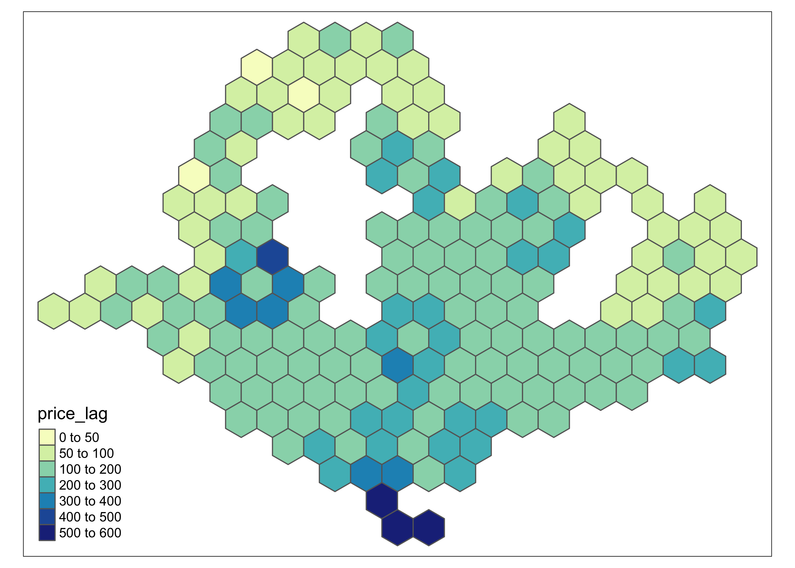
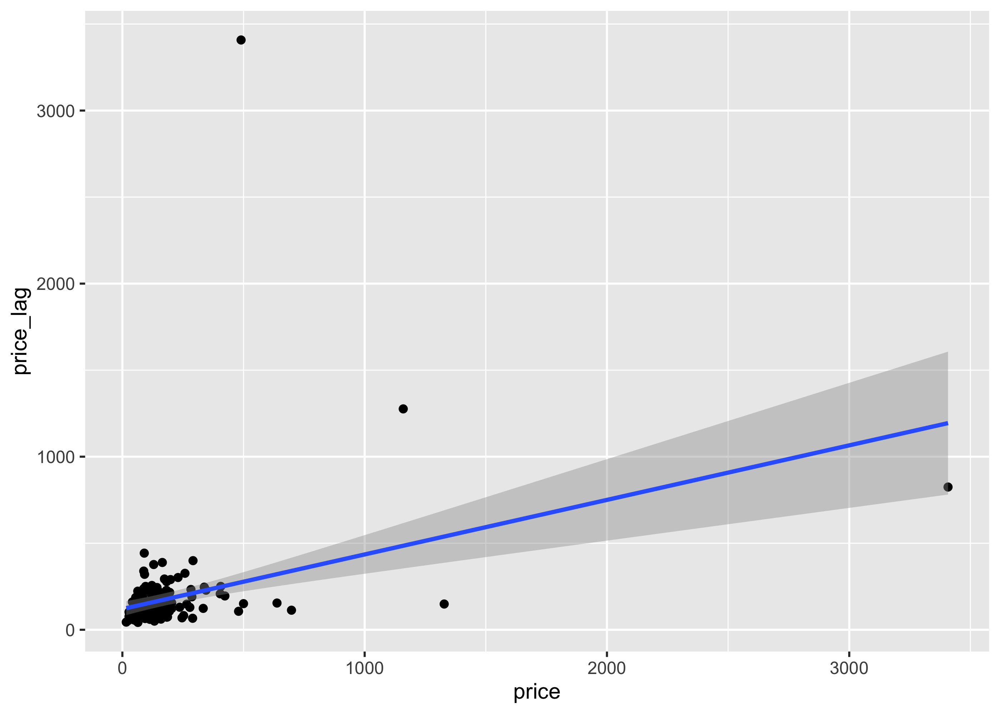
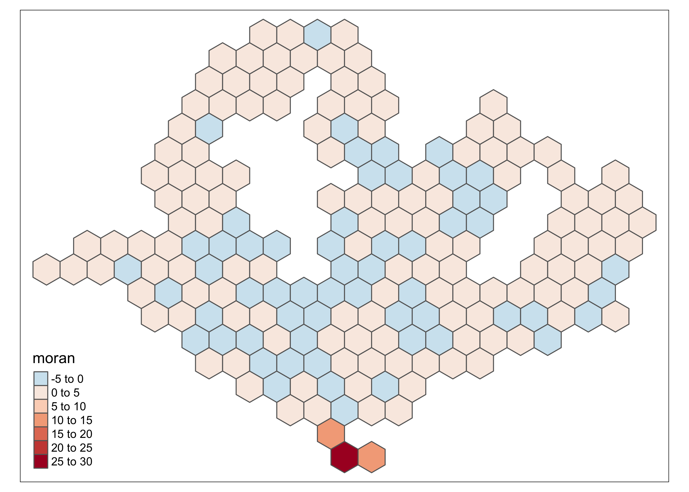

7 Spatial Autocorrelation
hex_sp <- as(price, "Spatial")
hex_neighbours <- poly2nb(hex_sp)
# visually inspect neighbours
plot(hex_neighbours, coordinates(hex_sp))## tmap mode set to plottingtm_shape(price_lag_df) +
tm_fill(breaks=c(0,50,100,200,300,400,500,600), col = "price_lag", palette="YlGnBu") + tm_borders()## Warning: Values have found that are higher than the highest break
7.1 Moran’s I
## `geom_smooth()` using formula 'y ~ x'
##
## Call:
## lm(formula = price_lag ~ price, data = price_lag_df)
##
## Coefficients:
## (Intercept) price
## 120.0737 0.3152Generally, there is a positive correlation between the price_lag and price variable, but the error increases as we go along due to the huge variation in prices of listings.
##
## Moran I test under randomisation
##
## data: price_lag_df$price
## weights: hex_weights
##
## Moran I statistic standard deviate = 9.4697, p-value < 2.2e-16
## alternative hypothesis: greater
## sample estimates:
## Moran I statistic Expectation Variance
## 0.315157154 -0.005263158 0.001144906Under the Moran I test, we can confirm that there is a significant positive autocorrelation between the residuals.
7.2 Local value of autocorrelation
moran_local <- localmoran(price_lag_df$price, hex_weights)
price_lag_df$moran <- moran_local[,1]
tm_shape(price_lag_df) +
tm_polygons(col = "moran", palette = "-RdBu")## Variable "moran" contains positive and negative values, so midpoint is set to 0. Set midpoint = NA to show the full spectrum of the color palette.
From here, we can see a hot spot where prices are extremely high in the southern islands.